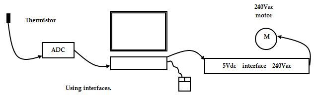
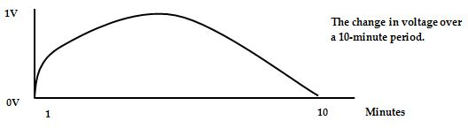

<div id="jsn-maincontent" class="span9 order1 row-fluid">
  <div id="jsn-maincontent_inner">
    <div id="jsn-centercol">
      <div id="jsn-centercol_inner">
        <div id="jsn-mainbody-content" class="jsn-hasmainbody">
          <div id="jsn-mainbody-content-inner1">
            <div id="jsn-mainbody-content-inner2">
              <div id="jsn-mainbody-content-inner3">
                <div id="jsn-mainbody-content-inner4" class="row-fluid">
                  <div id="jsn-mainbody-content-inner" class="span12 order1">
                    <div id="jsn-mainbody">
                      <div id="system-message-container"></div>

                      <div
                        class="item-page"
                        itemscope
                        itemtype="https://schema.org/Article"
                      >
                        <meta itemprop="inLanguage" content="en-GB" />

                        <div itemprop="articleBody">
                          <p></p>
                          <h1 style="text-align: center">
                            More on real-time operating systems
                          </h1>
                          <p class="NormalContent">
                            <strong>Introduction<br /></strong>According to the
                            British Computing Society's 'A Glossary of Computing
                            Terms', a real-time system is "one which can react
                            fast enough to influence behaviour in the outside
                            world". A key part of the above definition is the
                            phrase 'fast enough'. Many real-time systems have
                            outputs that change in fractions of a second as a
                            result of changes to input information combined with
                            the processing of that information. Examples of this
                            include missile guidance systems and plane control
                            systems. Some real-time systems, however, do not
                            happen in fractions of a second. A plane ticket
                            booking systems is an example of one such
                            system.&nbsp;
                          </p>

                          <p>
                            Another key part of the definition is the phrase
                            'influence behaviour'. It is important in real-time
                            systems that the processing of data from the input
                            sensors of a system environment actually influences
                            the outputs before the environment in which the
                            system operates has changed again of its own accord!
                            For example, suppose you have a greenhouse with a
                            ventilation window that can be opened and closed by
                            various amounts, depending upon the temperature in
                            the greenhouse. A temperature sensor is used to read
                            the temperature in the greenhouse. Let's suppose it
                            was very cold. This information is fed into a
                            computer. The computer processes the fact that it is
                            very cold and sends signals to the motor to close
                            the window. It would be a very poor system if, by
                            the time the window was actually closed, there was a
                            sudden heat wave and it was really hot in the
                            greenhouse! Outputs need to be changed quickly
                            enough to affect the environment in which the system
                            operates.&nbsp;
                          </p>
                          <p>
                            <strong
                              >Designing any real-time system - Input - Process
                              - Output</strong
                            ><br />When considering the design of any real-time
                            system and the selection of sensors and actuators,
                            it is important to try to picture the whole system
                            and ask some questions:&nbsp;
                          </p>
                          <ul style="list-style-type: disc">
                            <ul style="list-style-type: disc">
                              <li style="list-style-type: none">
                                <ul style="list-style-type: disc">
                                  <li>
                                    What data from the outside world do I need
                                    to monitor?
                                  </li>
                                  <li>
                                    How will I get the data from the outside
                                    world to the processor? (What sensors do I
                                    need?)
                                  </li>
                                  <li>
                                    Do I need to change the signal type of the
                                    sensor so it matches what the computer can
                                    handle? In other words, do I need an
                                    interface for the sensors?
                                  </li>
                                  <li>
                                    What will I actually do with the data, what
                                    decisions need to be made?
                                  </li>
                                  <li>
                                    What do I want to control and when? (This is
                                    the program you need to write!)
                                  </li>
                                  <li>
                                    How will I achieve control? (What actuators
                                    do I need?)
                                  </li>
                                  <li>
                                    Do I need to change the signal from the
                                    computer's type to what the actuators can
                                    handle? In other words, do I need an
                                    interface for any of the actuators?
                                  </li>
                                  <li>
                                    How can the system be started and
                                    stopped?<span style="line-height: 1.5"
                                      >&nbsp;</span
                                    >
                                  </li>
                                </ul>
                              </li>
                            </ul>
                          </ul>
                          <p>
                            <strong>A plane booking system</strong><br />Three
                            different companies of travel agents sell plane
                            tickets for a sightseeing flight around London. The
                            plane is small, with only six seats available. The
                            three companies use a central database to keep
                            details of what seats are available.
                          </p>
                          <p>
                            
                          </p>
                          <p>
                            If the first customer comes in to Exotica and buys
                            two seats then that information must be sent to the
                            central database (the input) and the database must
                            be updated (the processing) before anyone else can
                            be allowed to buy tickets. This is so that all the
                            agents can see exactly how many seats are left (the
                            output). If this didn't happen, then a family of
                            five could easily go into Sunshine Hols and buy five
                            tickets. This would result in the plane being
                            over-booked. This is an example of a real-time
                            system. The inputs into the system are the booking
                            details, the processing is the taking of the booking
                            information and updating the database and the output
                            is the updated database and tickets. Whenever a
                            booking is made, it influences the database quickly
                            enough so that over-booking is not possible. Booking
                            systems are examples of real-time systems.<br /> <br /><strong
                              >A missile guidance system</strong
                            ><br />When a missile is fired at a moving target,
                            the sensors will be feeding data into the missile's
                            processor (the input). The software program will be
                            processing the data it gets from the input and
                            making decisions about adjustments to the direction
                            of the missile (the processing). The processor then
                            sends signals to the fins and motors of the missile
                            that causes the direction of the missile to change
                            (the output). This is another example of a real-time
                            system, one that is happening very quickly indeed
                            compared to the real-time ticket booking system!
                            Note also in this example the use of feedback.
                            Feedback is when the sensors feed back the current
                            situation, in this example, some co-ordinates. The
                            actual value is compared to the desired value and
                            any adjustments in the output are made. Feedback is
                            very common in control systems where a 'target' or
                            'desired value' is needed.
                          </p>
                          <p>
                            <strong>Features of real-time systems</strong
                            ><br />Most control systems are time-critical. They
                            need things to happen quickly. They also need things
                            to happen reliably. So when, for example, a pilot
                            steers a plane to the left, the plane should move to
                            the left, quickly and every time! Applications such
                            as these are written in purpose-designed software
                            languages. ADA is one such example. It is a language
                            that has its roots in Pascal. It has features that
                            make it suitable for real-time applications. For
                            example, it can deal with concurrent events and can
                            be used in parallel processing architectures.
                            Parallel processing might be needed if there is a
                            lot of data and it cannot be processed within the
                            required time by one processor. By using parallel
                            processors, you can split the program up and run
                            different parts of it at the same time. You can also
                            use parallel processing to build into the system
                            some backup systems (sometimes called ‘fail-safe
                            systems’), in case the main one fails. It is
                            possible to identify some features of real-time
                            software as used in applications such as a plane's
                            control systems.
                          </p>
                          <ul>
                            <li style="list-style-type: none">
                              <ul style="list-style-type: disc">
                                <li>
                                  The output times are predictable within
                                  specified limits. This is important. When you
                                  use your computer at school and send something
                                  to print or start multi-tasking, then the
                                  speed that your computer will work at slows
                                  and slows unpredictably. In many real-time
                                  systems, it is important to be able to specify
                                  that XXX will happen within YYY milliseconds,
                                  regardless of whatever else is happening in
                                  the system, regardless of any interrupts that
                                  might occur.
                                </li>
                                <li>
                                  Backup systems will have been incorporated
                                  into both the software and hardware. If ever
                                  something fails in the system, there will be a
                                  backup system ready to take over immediately.
                                </li>
                                <li>
                                  The software is very fast! It will have been
                                  designed and written so that it runs at the
                                  optimum speed.
                                </li>
                              </ul>
                            </li>
                          </ul>
                          <p>
                            <strong>Transducers</strong><br />According to the
                            British Computing Society "A Glossary of Computing
                            Terms", a transducer is "an electronic component
                            which converts one form of energy to another". Some
                            examples of sensors are described in the next
                            section.
                          </p>
                          <p>
                            <strong>Sensors</strong><br />Sensors are devices
                            that respond to a specific physical property in a
                            system. They are transducers in that they take one
                            form of energy and convert it into another. Here are
                            some examples.
                          </p>
                          <ul style="list-style-type: disc">
                            <li style="list-style-type: none">
                              <ul style="list-style-type: disc">
                                <li>
                                  A thermistor is a temperature sensor (or
                                  temperature transducer). It converts a
                                  temperature into an analogue voltage. The
                                  voltage generated depends upon the
                                  temperature. There are an infinite number of
                                  temperatures and so there are an infinite
                                  number of voltages. Devices that generate an
                                  infinite range of values are known as
                                  'analogue' devices. You could use a thermistor
                                  in a chemical plant to read the temperature of
                                  a reaction. The processor could convert the
                                  data from the transducer into a graph.
                                  Operators could then see the history of the
                                  temperature of a reaction.
                                </li>
                                <li>
                                  A photocell is a light sensor (light
                                  transducer). It converts light energy into an
                                  analogue voltage. Light meters use photocells.
                                  A photographer can set up a camera according
                                  to the light available, as indicated on a
                                  light meter.
                                </li>
                                <li>
                                  A pressure sensor (pressure transducer) in a
                                  chemical reaction vessel converts pressure
                                  into an analogue signal.
                                </li>
                                <li>
                                  A pressure mat in a burglar alarm is a sensor.
                                  It senses whether someone is either on the mat
                                  or off it. It has two possible states: on and
                                  off so it is known as a digital device.
                                </li>
                                <li>
                                  A switch or push-button is a digital sensor.
                                  It detects one of two positions: on and off.
                                  Switches can be used to send signals to a
                                  system. For example, an operator in a factory
                                  might start a system by pressing the 'start'
                                  button. This signal is fed into the computer,
                                  which processes the signal in its program.
                                </li>
                                <li>
                                  A proximity sensor is a digital sensor. When
                                  something gets too close to it, it generates a
                                  voltage. When there is nothing next to it, it
                                  generates no voltage. Proximity sensors, for
                                  example, can be used to signal to a lift
                                  control system that a particular floor is
                                  coming up. The program can then order the
                                  motor to slow down.
                                </li>
                              </ul>
                            </li>
                          </ul>
                          <p>
                            <strong>Interfaces</strong><br />Computers are
                            digital devices. They can only use digital signals.
                            A computer might use, for example the two signals 5
                            volts and 0 volts. Any signals going into the
                            computer must be digital, use the same voltage the
                            computer uses and be able to connect to the ports
                            used by the computer. Suppose a proximity sensor, a
                            digital device, uses 5 Volts but the wire carrying
                            the signal is connected to a plug that can't be
                            connected to the port at the back of the computer!
                            Suppose a pressure mat uses 12 volts. How can this
                            be connected up to a computer that can only take 5
                            Volts? How can you connect an analogue temperature
                            sensor, with lots of possible voltages being
                            generated, to a computer that can only accept two
                            different voltages? You need an interface!<strong
                              style="line-height: 1.5"
                              ><span class="NormalContentHeading"
                                >&nbsp;</span
                              ></strong
                            >
                          </p>
                          <p>
                            <strong style="line-height: 1.5"
                              ><span class="NormalContentHeading"
                                ></span
                            ></strong>
                          </p>
                          <p>&nbsp;</p>
                          <p>
                            An interface converts analogue signals into digital
                            (or vice versa). It converts signals from one
                            voltage level to the computer's voltage level. It
                            provides a means of ensuring that sensors and
                            actuators can be physically connected to the
                            computer.&nbsp;
                          </p>
                          <p>
                            <strong>Analogue to Digital Converters (ADC)</strong
                            ><br />One common requirement is for analogue
                            signals to be converted into digital signals. This
                            is done using an Analogue to Digital Converter, or
                            ADC. It takes the analogue signal and converts it
                            into digital information, which can be read by the
                            computer.
                          </p>
                          <p>
                            
                          </p>
                          <p>
                            <strong
                              >An example of the need for an interface with an
                              ADC</strong
                            ><br />Suppose we have a chemical reaction
                            experiment in class and we want to measure the
                            temperature during the reaction. We want to display
                            the temperature at minute intervals on the computer.
                            We will use a thermistor to read the temperature. A
                            thermistor is a type of transducer. The voltage
                            signal that comes out of the thermistor constantly
                            changes as the temperature changes. There are an
                            infinite number of temperatures possible so there
                            are an infinite number of voltages possible. For
                            this reason, we say that the thermistor is an
                            analogue device. We will assume that the voltage
                            varies anything from 0 volts to 1 volts for a range
                            of temperatures from 0 deg C to 150 deg C. We cannot
                            just plug the analogue device into the computer.
                            Firstly, the computer is a digital device and only
                            understands digital signals. Secondly, the voltages
                            sent out of the thermistor may not be of the same
                            level as the voltages used by the computer. Thirdly,
                            it may physically not be possible to connect the
                            wires from the thermistor into an I/O port at the
                            back of the computer. For these reasons we need an
                            interface. One part of the interface will be the ADC
                            or Analogue to Digital Converter.
                          </p>
                          <p>
                            <strong
                              >How does an Analogue to Digital Converter (ADC)
                              help?</strong
                            ><br />We need to be able to convert any analogue
                            voltage into a digital one. There will also be times
                            when we need a Digital to Analogue Converter (DAC),
                            to take a digital signal and generate an analogue
                            voltage. If we constantly recorded the analogue
                            voltage over a 10-minute period, we may end up with
                            a graph that looks like this:
                          </p>
                          <p>
                            
                          </p>
                          <p>
                            At the start of the experiment, the voltage from the
                            thermistor is about 0.1 volts because the
                            temperature is about 15 deg C. It rises steeply in
                            the first minute and then steadily up to about 0.95
                            volts after 5 minutes, corresponding to about 140
                            deg C. It then declines steadily over the next 5
                            minutes. An ADC will read the voltage at set time
                            intervals. To put it another way, it will sample the
                            voltage regularly. How many samples we decide to
                            take in any period of time is known as the sample
                            rate and the only way to decide what is the best
                            sample rate is to examine each problem on its own.
                            In some applications, you may need to take a sample
                            only once an hour, for example, measuring the
                            temperature on top of a mountain. There may be other
                            circumstances, such as in the above experiment where
                            taking a sample once every hour would mean that
                            important events are missed! A better sample time
                            might be once a minute or once every 30 seconds. Of
                            course, we could take 1000 readings per second if we
                            wanted to but this would not give us any more
                            information than taking a reading once a minute. All
                            we would be doing is wasting computer storage.
                            Choosing the right sample rate is a mixture of
                            common sense and experience! Let us decide on a
                            sample rate of one reading per minute. Each time a
                            sample is taken, the voltage is converted into a
                            digital value. The digital value will depend upon
                            the type of ADC we have. For example, suppose we had
                            an 8-bit ADC. That means that we have 256 different
                            bit patterns (0 - 255).
                          </p>
                          <ul style="list-style-type: disc">
                            <li style="list-style-type: none">
                              <ul style="list-style-type: disc">
                                <li>
                                  If the ADC reads 0 volts this will be
                                  represented as 00000000
                                </li>
                                <li>
                                  If the ADC reads 1/255 volt this will be
                                  represented as 00000001
                                </li>
                                <li>
                                  If the ADC reads 2/255 volts this will be
                                  represented as 00000010
                                </li>
                                <li>
                                  If the ADC reads 3/255 volts this will be
                                  represented as 00000011, and so on.
                                </li>
                              </ul>
                            </li>
                          </ul>
                          <p>
                            We can show this diagrammatically. The first two
                            conversions have been shown on the graph.
                          </p>
                          <p>
                            
                          </p>
                          <p>
                            By using an 8-bit ADC, we can only divide up our 1
                            volt range into 1/256 divisions. We could get a much
                            greater accuracy by using a 16-bit ADC. We could now
                            divide up our 1 volt into about 65000 divisions and
                            we could therefore measure even smaller changes to
                            temperature. This is the same as saying we can
                            measure the temperature more accurately! There is
                            nothing stopping us using a 32-bit ADC for even
                            better accuracy.
                          </p>
                          <p>
                            <strong>Actuators</strong><br />According to the
                            British Computing Society "A Glossary of Computing
                            Terms", an actuator is "any device which can be
                            operated by signals from a computer or control
                            system causing physical movement". Sometimes, the
                            processor in a system can change outputs directly
                            (via an interface). E.g. lights could be switched on
                            or off, an intruder alarm could be sounded or
                            stopped, a graph could be plotted on the screen.
                            However, when physical movement is required you need
                            an actuator. You need a device that can cause
                            movement when you send an electrical signal to it.
                            E.g. if you needed to let water flow through a pipe,
                            you might need to move a hydraulic arm that was
                            connected to a valve. The hydraulic arm accepts
                            electrical signals and moves. It is an example of an
                            actuator. You might need to start and stop a lift by
                            starting and stopping a motor. The motor is another
                            example of a device that accepts electrical signals
                            that causes physical movement. You might need to
                            send a signal to a solenoid valve, so that it
                            operates and opens a lock on a security door. The
                            solenoid valve is an actuator. Just as you need
                            interfaces to convert signals from various sensors
                            into the signals used by the computer, you also need
                            interfaces to convert signals from the computer into
                            voltage types and levels that actuators (and other
                            output devices) use. A motor might use 440 Volts ac.
                            You would use an interface to allow 5 volts dc to
                            switch on and off a device that uses a much bigger
                            voltage.&nbsp;
                          </p>
                          <p class="QuestionStyle"></p>
                        </div>
                      </div>
                    </div>
                  </div>
                </div>
              </div>
            </div>
          </div>
        </div>
      </div>
    </div>
  </div>
</div>
